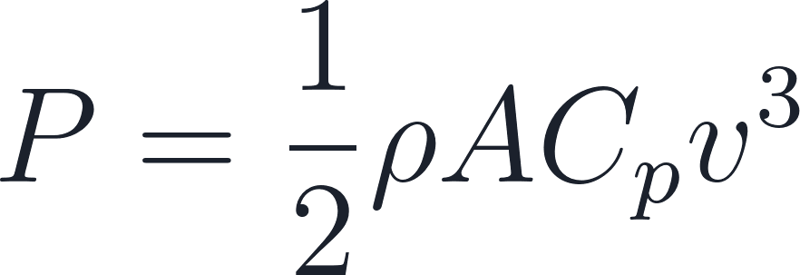
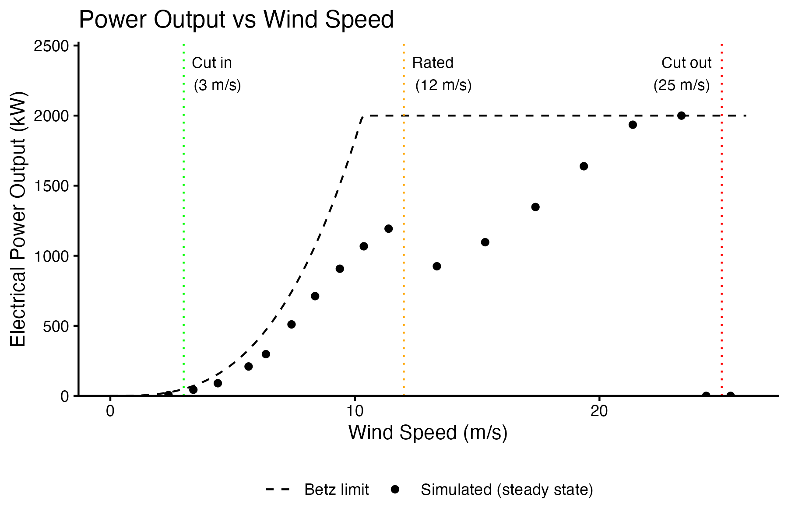
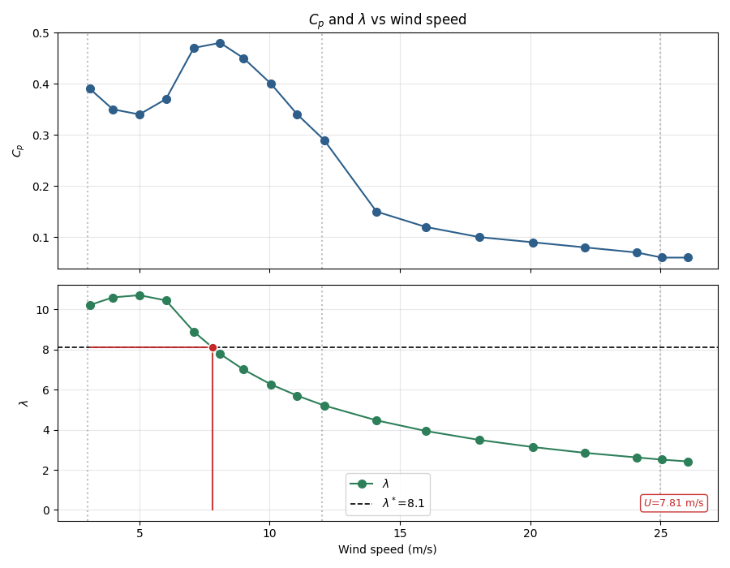
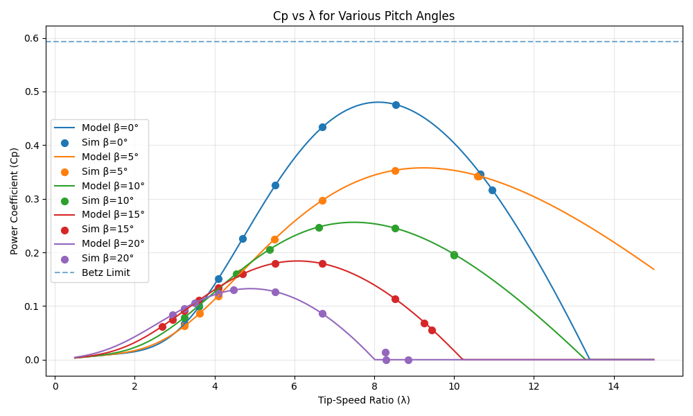
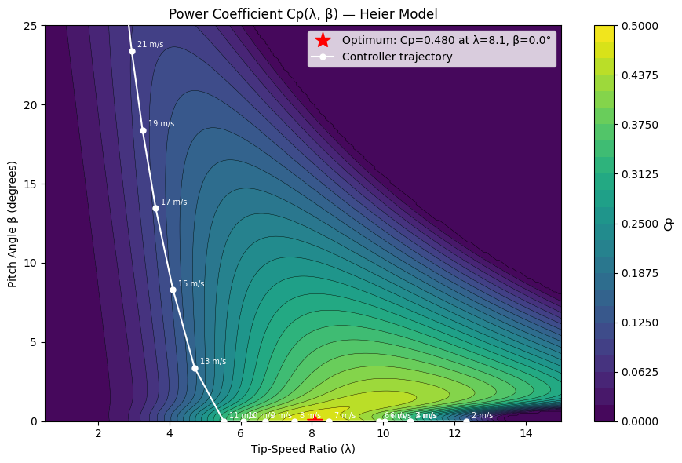
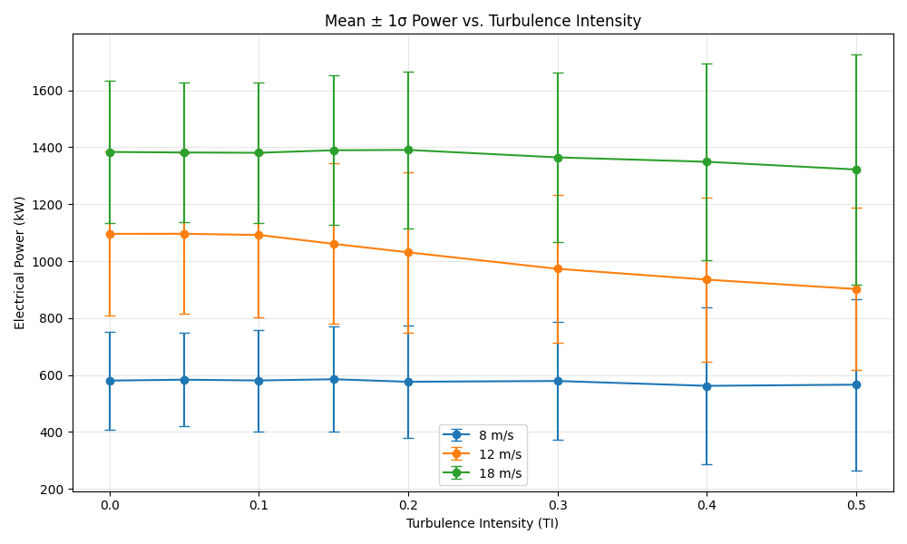
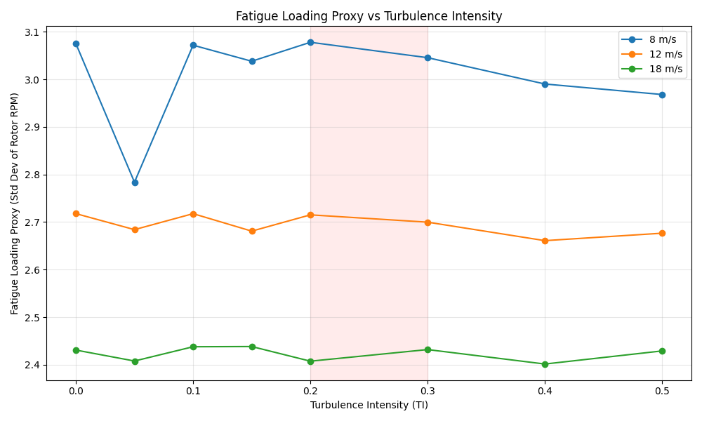
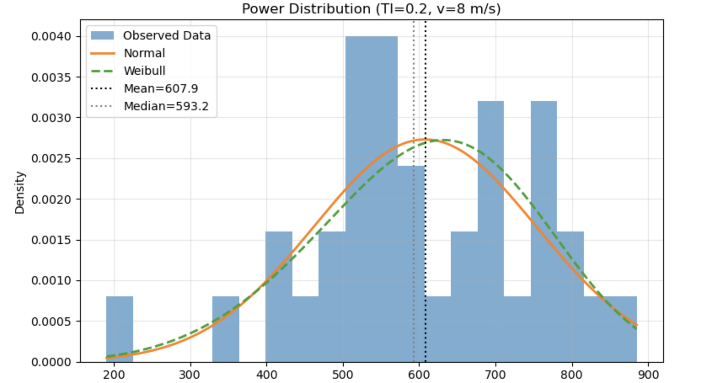
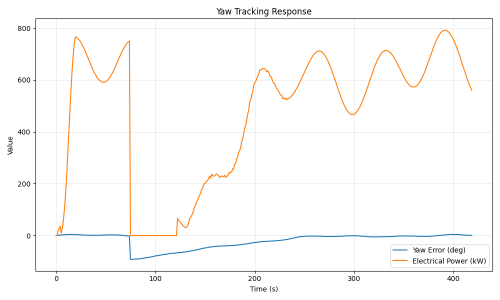
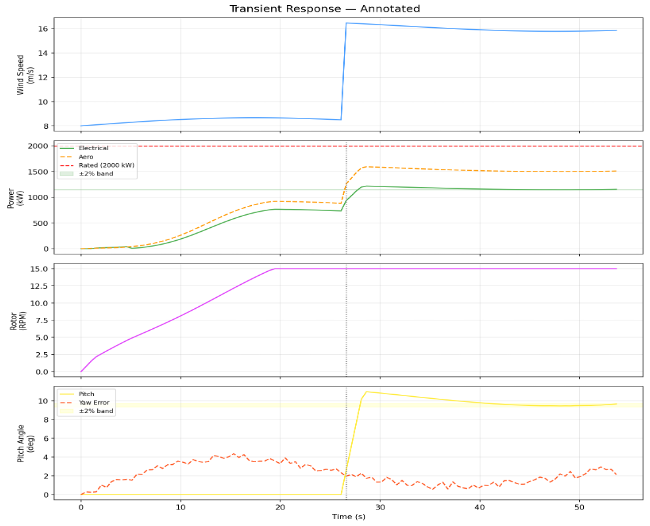

Coupled physics
Aerodynamic power depends on rotor speed, pitch, and inflow simultaneously. A small Cp(λ, β) error compounds through the operating envelope before it shows up at the generator.
Heier Cp surfaceA reduced-order horizontal-axis wind turbine digital twin runs in the browser. Five sequential experiments check it against analytical physics, exercise it under turbulence and transients, and document where the model must not be trusted, including a 7× surrogate-vs-twin annual energy gap that surfaced during design optimisation.
Three properties make turbine twins hard to trust without a verification plan. Each card stands on its own.
Aerodynamic power depends on rotor speed, pitch, and inflow simultaneously. A small Cp(λ, β) error compounds through the operating envelope before it shows up at the generator.
Heier Cp surfaceReal wind is turbulent. Mean power, variability, and fatigue proxies respond to turbulence intensity in different regions, they cannot be inferred from a steady-state curve.
TI sweep 0–0.5Pitch, yaw, gust response, and emergency brake must behave correctly under step changes, or the twin overstates rated-power recovery and understates dynamic losses.
RPM cap mattersThree subsystems sit behind every experiment: aerodynamic physics, rotor and control dynamics, and a CSV-emitting simulation loop.
Heier parametric Cp(λ, β) drives aerodynamic power. Inputs are wind speed, rotor speed, and pitch; output is captured rotor power before drivetrain losses.
Rotor inertia, pitch, yaw, and braking integrate against aerodynamic torque and generator load across operating regions.
Browser physics engine runs the model in real time and exports CSV time-series for offline analysis in Python and R.
Generator engages, partial load begins.
2,000 kW output, pitch begins limiting.
Protective shutdown, brake engaged.
Theoretical Cp ceiling; twin reaches 0.48.
Same engine as the lab twin. Set wind, direction, and turbulence; trigger a gust or emergency brake; export CSV for your own analysis.
Keyboard: Space play/pause · G gust · B brake · R reset. The simulator below is the canonical artifact for every experiment summarised on this page.
Each phase answers a single verification question. Together they form the validation chain from baseline physics to design support, with the surrogate-vs-twin gap recorded as an explicit caveat.
Short answers shown directly. Full evidence is in the technical section.
Wind projects need credible what-if analysis before committing to hardware. The twin offers a repeatable testbed where operating points can be swept, time-series exported, and results compared to analytical limits (Betz, Heier Cp), supporting early design and control work without a full aeroelastic solver.
Physically plausible behaviour against known theory, not perfect match to Betz. Criteria: correct cut-in / cut-out, cubic partial-load region, rated-region pitch limiting, Cp peak near λ* = 8.1 at ~81% of Betz, and explicit acknowledgement where the surrogate over-predicts annual energy.
Twin reproduces realistic regions below the Betz curve. Peak Cp ≈ 0.48 at β = 0°, λ ≈ 8. Turbulence raises variability most at 12 m/s; fatigue proxy peaks at 8 m/s. Power under TI is left-skewed (Weibull beats Normal). Transients are stable; RPM cap limits rated-power capture after large steps.
The model is reduced-order; no structural dynamics, wake rotation, dynamic stall, or BEM tip-loss. The optimisation surrogate predicted 20.5 GWh/yr vs 3.0 GWh/yr from the twin because it assumed perfect TSR tracking and ignored turbulence and controller transients. Field validation is required for deployment decisions.
The work follows a V-model verification path: define twin architecture, characterise baseline, verify the aerodynamic kernel against an independent reference, quantify uncertainty, validate controls under transients, and close with optimisation and sensitivity, mirroring how digital twins support requirements validation before physical test.
Blade-element momentum with tip-loss, aeroelastic fatigue, wake interaction, grid integration, SCADA, and certified AEP guarantees. No claim of IEC 61400 compliance or manufacturer-specific controller fidelity.
Governing physics, parameter tables, experiment-by-experiment evidence with figures, pipeline diagram, discussion, and conclusions from the course submission.
The sections below preserve the full case study: systems framing, the five-experiment program, data and analysis pipeline, governing physics, twin architecture, results with figures, discussion of limitations, and conclusions.
Before a digital twin can support control design, siting, or sizing, stakeholders need to trust that it reproduces dominant physics under known conditions. For wind energy that means credible power curves, an aerodynamic efficiency surface that matches an independent reference, sensible response to turbulence, and safe transient behaviour, not a cartoon animation.
This project treats a browser-based HAWT simulation as a systems artifact: explicit inputs (wind speed, direction, turbulence), internal state (rotor speed, pitch, yaw error), and measurable outputs (electrical power, Cp, λ). Five experiments progressively raise fidelity demands, from deterministic steady states through stochastic loads to design search.
Each experiment answers one verification question. Together they form a closed validation narrative from baseline physics to decision support.
| Exp. | Question | Method summary | Key recorded outcome |
|---|---|---|---|
| 1 | Trust baseline physics? | Wind sweep 3–26 m/s, TI = 0, steady-state CSV | Realistic P(v); CF = 19.4% |
| 2 | Is Cp(λ, β) implemented correctly? | Lock pitch β ∈ {0…20°}; compare to Heier surface | Peak Cp ≈ 0.48; strong agreement β ≤ 15° |
| 3 | Behavior under uncertainty? | TI ∈ {0…0.5} at 8, 12, 18 m/s | Variability ↑ at rated; fatigue proxy max at 8 m/s |
| 4 | Controls handle transients? | Wind step, yaw step, gust, e-brake | Stable shutdown; RPM cap limits rated capture |
| 5 | Can twin inform design? | DE optimiser + surrogate AEP | Surrogate 20.5 vs twin 3.0 GWh/yr |
The twin runs in the browser; experiments export CSV time-series. Offline Python, R, and Jupyter notebooks compute steady-state metrics, compare against analytical references, and produce presentation figures.
Aerodynamic power extraction follows the standard relation with Heier parametric Cp(λ, β). Rotor dynamics integrate aerodynamic torque against friction and generator loading; pitch and yaw controllers modulate setpoints across operating regions.
| Parameter | Value | Role |
|---|---|---|
| Blade length R | 40 m | Swept area πR² ≈ 5,027 m² |
| Rated power | 2,000 kW | Electrical output cap |
| Cut-in / rated / cut-out | 3 / 12 / 25 m/s | Operating envelope |
| Optimal TSR λ* | 8.1 | MPPT target |
| Betz limit | 0.593 | Theoretical Cp ceiling |
| Max rotor speed | 15 RPM | Hard cap (affects high-wind λ) |
Four subsystems chain from environment to electrical output: wind model → aerodynamic physics → rotor and generator dynamics → control layer. Configuration parameters (geometry, rated power, Cp coefficients) live in a single config module consumed by the simulation loop and renderer.

Steady-state runs at TI = 0 show cut-in at 3 m/s, cubic partial-load growth, rated transition near 12 m/s, and protective cut-out at 25 m/s. Output sits below the Betz theoretical curve, expected given generator efficiency, friction, and control limits. Weibull integration (k = 2, c = 7 m/s) yields a 19.4% capacity factor.


Locked-pitch sweeps match the Heier analytical surface at β = 0°–15°. Global optimum at λ* = 8.1, β = 0° with Cp,max = 0.480 (81% of Betz). Localised mismatch at β = 20° and extreme λ is attributed to discretisation, transient settling, and unmodeled drivetrain effects.


Turbulence increases power variability everywhere; mean power degrades most at 12 m/s (rated). Fatigue loading proxy (RPM fluctuation σ) peaks at 8 m/s when pitch is inactive, TI > 0.1 near rated marks operational concern. At TI = 0.2, v = 8 m/s, power is left-skewed (skewness −0.37); Weibull fits better than Normal by Kolmogorov–Smirnov.



Wind step 8→16 m/s: peak +146 kW (7.3% of rated), settling ~34 s, new steady state below pre-step baseline. Yaw 270°→180°: rise 1.52 s, settling 14.3 s, no overshoot. Gust at 10 m/s: +7.3% peak. Emergency brake from 15 RPM: decel 95 s, 34.5 MJ dissipated. The RPM cap prevents optimal TSR after large steps, rated power is not fully recovered.


Differential evolution found R* = 80 m, λ* = 6.67, η_gen = 0.97 at the rated 5 MW constraint boundary. Surrogate annual energy (Rayleigh mean 7.5 m/s, perfect TSR) = 20.5 GWh/yr; dynamic twin extrapolation = 3.0 GWh/yr. Gap driven by missing turbulence, transients, and a controller tuned for the R = 40 m baseline.
| Parameter | Optimal | Constraint | Met? |
|---|---|---|---|
| R* | 80 m | 20–80 m | Y |
| λ* | 6.67 | 5–12 | Y |
| η_gen | 0.97 | 0.85–0.97 | Y |
| P_rated | 5,000 kW | ≤ 5,000 kW | Y |
This project delivered a browser-based wind turbine digital twin and a five-experiment verification program aligned with systems engineering practice. Experiment 1 established that the twin produces physically credible power curves, cut-in, partial-load cubic growth, rated-region limiting, and cut-out protection, with output intentionally below the Betz ideal. A Weibull site model (k = 2, c = 7 m/s) yields a 19.4% capacity factor, linking the simulation to deployment-level expectations.
Experiment 2 verified the aerodynamic kernel against the independent Heier Cp(λ, β) surface. Peak Cp ≈ 0.48 at λ* = 8.1 reaches 81% of the Betz limit, with strong agreement for pitch angles up to 15°. Experiment 3 showed that operational risk is governed by the interaction of wind regime and turbulence: variability and fatigue proxies peak in different regions (rated vs partial load), and power distributions become left-skewed, poorly represented by Gaussian assumptions alone.
Experiment 4 demonstrated that pitch, yaw, gust, and emergency-brake logic respond correctly to dynamic events, while exposing a practical limit: the 15 RPM cap prevents full rated-power recovery after large wind steps. Experiment 5 applied optimisation to turbine sizing and surfaced the engineering lesson the report leads with. The analytical surrogate over-predicted annual energy by roughly 7× relative to the dynamic twin because it assumed perfect tracking and ignored turbulence and transients.
Taken together, the work shows how a lightweight digital twin can support structured V&V: define architecture, characterise baselines, verify against theory, quantify uncertainty, test controls, and document where the model must not be trusted. The interactive simulation is the primary artifact; this page documents the evidence chain behind it.
For practitioners, the actionable read is: use the twin for comparative studies, control prototyping, and teaching. Do not treat surrogate AEP or uncorrected Cp peaks as bankable without field data and higher-fidelity aeroelastic integration. The natural next step is controller retuning on optimised geometry and BEM-based loss models, closing the gap between classroom twin and operational asset.